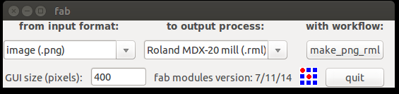
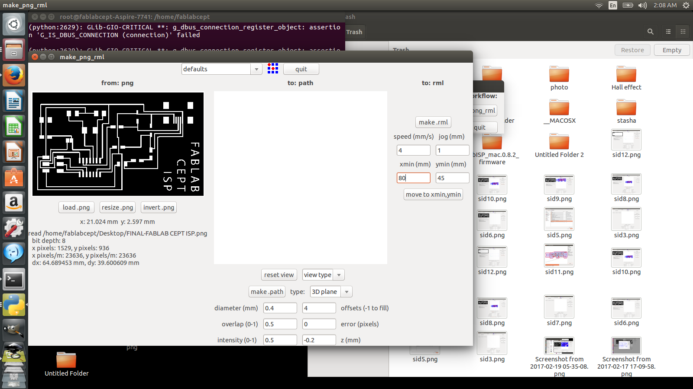
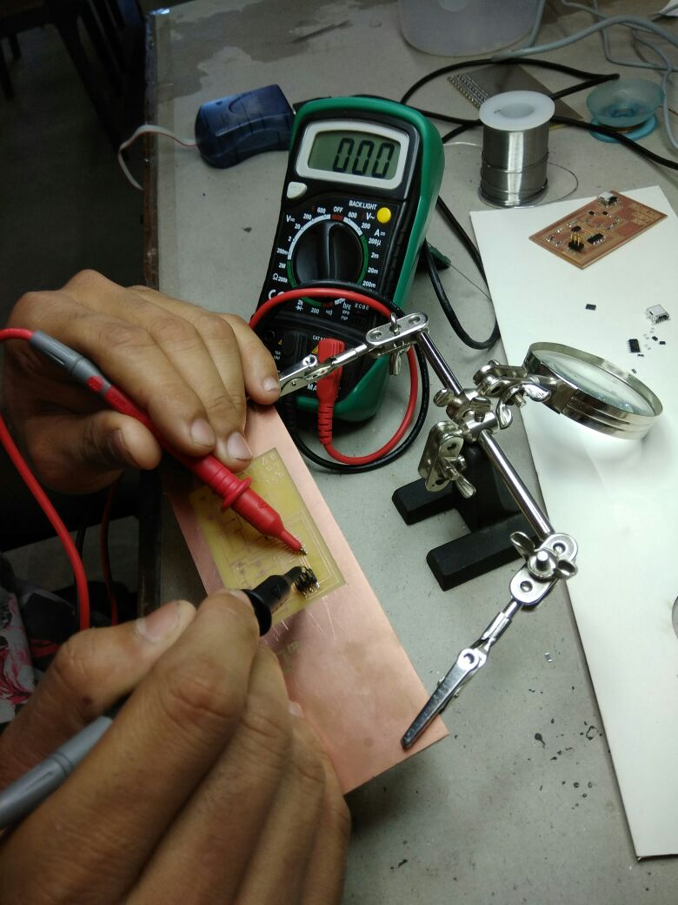
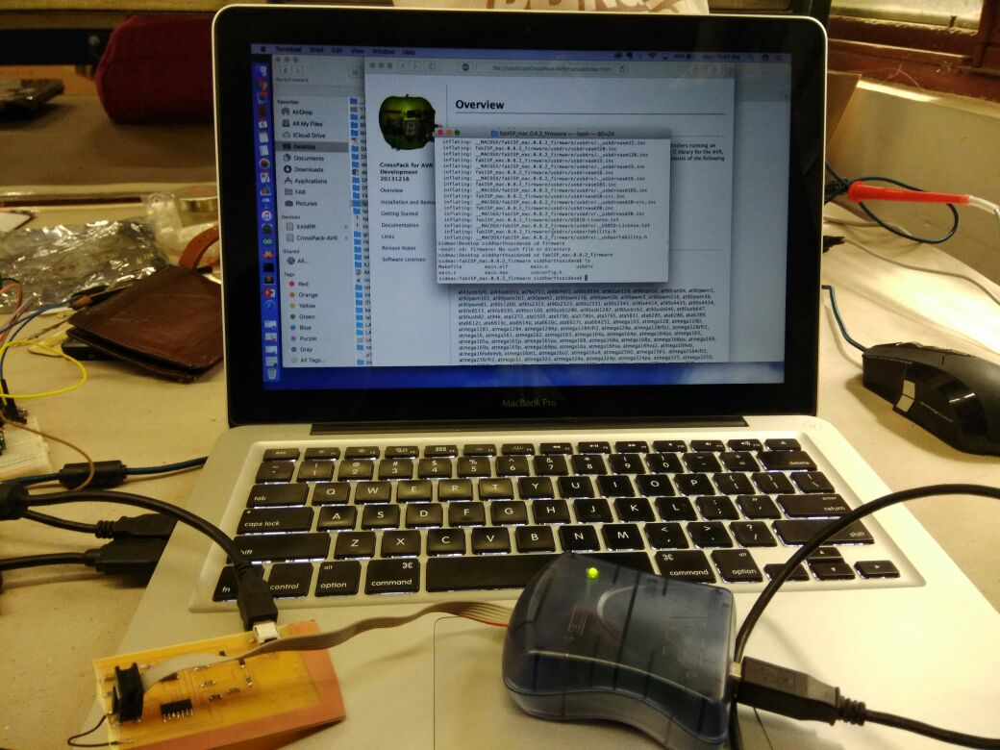
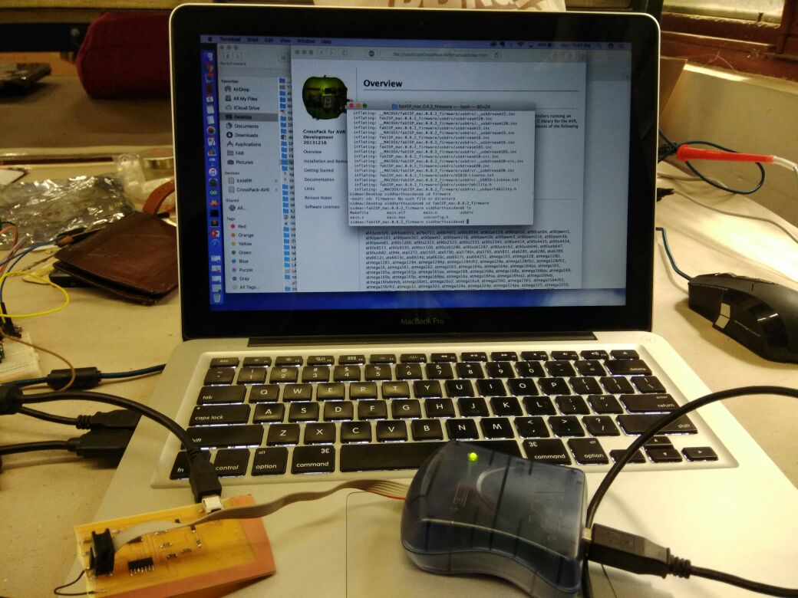

- Roland MDX 20
Milling PCB ( LINUX )
- PNG image is required for milling
- We have Linux laptop connected with Milling Machine
-
Open Terminal > sudo fab

- After Opening you have to select type of image which is PNG and select Machine which is to be used
 - Then Load PNG to software and make a path ( You can change offset settings)
 - After Making Path you have to adjust machine according to start point which can be done from X and Y axis distance setting

- After you done with start point you can Create RML and load it to Machine

Soldering SMD Components



